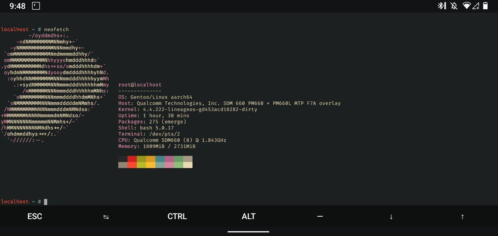

Starting System-as-Root Android in a LXC container
Posted on ·Table of Contents
As I progress in my GSoC journey, my next task is to boot System-As-Root based Android in an LXC container inside Gentoo. As the name suggests, SAR devices use /system as their rootdir instead of /boot. SharkBait was based on the older booting mechanism. If you would want to know more about Android's Booting mechanism, I would recommend to have a look at this blog.
Basically if you own a device that shipped with Android 9 (even the ones which are updated to Android 10) you would want to follow this guide.
Prerequisites
This setup expects some prerequisites which are as follows:
- Have Gentoo installed as a chroot in your Android device. guide
- You should have a LXC enabled Kernel. guide
- You should have encryption disabled on your phone. guide
- You should have SELinux disabled.
- You should have the schedtune cgroup disabled.
The 4th and 5th prerequisites are addressed in the next section.
Preparing the boot image
Clone the SAR-Preinit repository
git clone https://gitlab.com/WantGuns/sar-preinit.git --depth 1Pull out your device's boot.img in the artifacts directory.
cd sar-preinit
adb root
adb shell dd if=/dev/block/bootdevice/by-name/boot | dd of=artifacts/boot.imgNow unpack the boot.img using the Makefile provided and edit the bootimg.cfg file produced in out/unpack directory.
make unpack
nvim out/unpack/bootimg.cfgAdd this string to the cmdline key, if not already present.
androidboot.selinux=permissive cgroup_disable=schedtuneThis addresses the 4th and 5th prerequisites. If the kernel you are currently using is not LXC-enabled, you could swap the zImage inside the unpack directory with the LXC-enabled kernel image.
Now we can finally repack and patch the boot image for the use of SharkBait.
make repackThe boot-mod.img under the out directory is the patched boot which we need. Just don't flash it yet.
Preparing the bootstrap-init
Since System-As-Root requires a special environment unlike Android's older iterations, we need a init to bootstrap Android in the container. Currently the bootstrap-init requires NDK for building, this is subject to change for native compilation later.
People who are in a hurry could checkout the pre-built binaries provided here and skip the hassle of manually setting up their environment and compiling it.
If you're not one of them, continue following. Clone the repository and edit the Makefile's provided NDK path with your own NDK path.
git clone https://gitlab.com/WantGuns/bootstrap-init.git --depth 1
cd bootstrap-init
nvim MakefileThen call make in the bootstrap-init folder. This will build the required binary for different architechtures, we should focus on arm64-v8a inside the libs folder.
Copy the downloaded/compiled bootstrap-init to Gentoo's home, we will need it later.
adb push libs/arm64-v8a/bootstrap-init /data/gnu/home/initPreparing Gentoo for Android
Chroot into Gentoo and start setting it up.
adb root
adb shell
## Now switched to Android's shell
# Generate SSH key pairs, (will come in use later)
ssh-keygen -t ed25519 -C android -f /data/ssh/id_ed25519
mount -t proc /proc /data/gnu/proc
mount --rbind /dev /data/gnu/dev
mount --rbind /sys /data/gnu/sys
chroot /data/gnu /bin/bash
## Now switched to Gentoo's root
source /etc/profile
mkdir -p /var/lib/android/{system,vendor,data,system,cache}
mkdir -p /var/lib/lxc/android/{rootfs,run,artifacts}All the commands henceforth are executed in the Gentoo chroot unless specified otherwise.
Fstab
Edit Gentoo's fstab with mount entries for Android's partitions.
####/etc/fstab#####
# Android mounts
/dev/mmcblk0p63 /var/lib/android/system ext4 ro,barrier=1,inode_readahead_blks=8 0 0
/dev/mmcblk0p55 /var/lib/android/persist ext4 noatime,nosuid,nodev,barrier=1,data=ordered,nomblk_io_submit 0 0
/dev/mmcblk0p64 /var/lib/android/vendor ext4 ro,barrier=1,inode_readahead_blks=8 0 0
/dev/mmcblk0p62 /var/lib/android/cache ext4 noatime,nosuid,nodev,barrier=1,data=ordered,nomblk_io_submit,noauto_da_alloc 0 0
/dev/mmcblk0p66 /var/lib/android/data ext4 noatime,nosuid,nodev,barrier=1,data=ordered,nomblk_io_submit,noauto_da_alloc,inode_readahead_blks=8 0 0
# Bind into container
/run /var/lib/lxc/android/rootfs/run none bind 0 0Install LXC
At the time of writing this blog, LXC's version 4 does not work for the setup. I would recommend to install the version 3.
emerge -av --autounmask=y =app-emulation/lxc-3.0.3After this is done, setup the helper scripts for the container.
cd /var/lib/lxc/android
## lxc's config
cat > config <<EOF
lxc.uts.name = android
lxc.rootfs.path = /var/lib/lxc/android/rootfs/
lxc.init.cmd = /init
lxc.net.0.type = none
lxc.autodev = 0
lxc.log.level = 0
lxc.log.file = /var/log/lxc/hellalxc.log
lxc.hook.pre-start = /var/lib/lxc/android/pre-start.sh
lxc.hook.post-stop = /var/lib/lxc/android/post-stop.sh
lxc.cgroup.cpu.rt_runtime_us = 950000
lxc.console.path = none
EOF
## pre-start.sh
cat > pre-start.sh <<EOF
#!/bin/sh
cp /var/lib/lxc/android/artifacts/init /var/lib/lxc/android/rootfs/init
mkdir -p /var/lib/lxc/android/rootfs/dev
mkdir -p /run
if [ -f /run/.android-shutdown ]; then
# we're shutting down; don't respawn
echo "Shutting down, won't restart."
exit 1
fi
# handle cgroup
mkdir /sys/fs/cgroup/cpu/lxc
echo 950000 > /sys/fs/cgroup/cpu/lxc/cpu.rt_runtime_us
EOF
## post-stop.sh
cat > post-stop.sh <<EOF
#!/bin/bash
# do not reboot / restart when debugging
if [ -f /run/.android-debug ]; then
echo "Debug mode, won't power off."
exit 0
fi
# clean rootfs for SAR-enabled devices.
rm -rf /var/lib/lxc/android/rootfs/*
# leave mark to prevent container restart
touch /run/.android-shutdown
if [ -f /run/.android-reboot ]; then
echo "Rebooting..."
reboot
else
echo "Powering off..."
poweroff
fi
EOFCopy the bootstrap-init binary to the artifacts folder.
cp /home/init /var/lib/lxc/android/artifacts/initIf it helps, this is the /var/lib/lxc/android tree :
localhost /var/lib/lxc/android $ tree .
.
├── artifacts
│ └── init
├── config
├── post-stop.sh
├── pre-start.sh
├── rootfs
└── runCheck if the container is getting detected by Android using lxc-info android. If it is getting detected, we should be ready to go.
Finally, setup the lxc.android service so that the container auto-starts on boot.
cd /etc/init.d
ln -s lxc lxc.android
rc-update add lxc.android bootAs a bonus, we can also setup SSH for accessing Gentoo when Android boots. The dialhome script mentioned below can be found here.
umask 077
mkdir -p ~/.ssh
mount /dev/block/by-name/userdata /var/lib/android/data/
cat /var/lib/android/data/ssh/id_ed25519.pub >> ~/.ssh/authorized_keys
cp dialhome /var/lib/android/data/ssh/
chmod u+x /var/lib/android/data/ssh/dialhome
chown 2000:2000 /var/lib/android/data/ssh/dialhome
umount /var/lib/android/data
rc-update add sshd defaultWe are done with Gentoo now, exit it and unmount its pseudofs
exit
## Now back in Android's Shell
umount -f /data/gnu/proc
umount -l /data/gnu/sys
umount -l /data/gnu/devFinal Steps
We are almost done now.
- Reboot to your Recovery and flash the
boot-mod.imgto thebootpartition. Fastboot users could also flash it via
fastboot flash boot boot-mod.img- While you're in the Recovery mode, fire up adb again and patch the
init.rcpresent in/systemaccording to the patch here. Keep in mind that we do not need to patch Android'sfstabif you're following this setup.
And then finally cross your fingers and reboot. If Android boots, congrats, you just joined the SharkBait party. But it gets even better.
Final Thoughts and Scopes of Improvement
If Android does not boot, check the logs at /data/gnu/var/logs. Check dmesg for kernel logs, rc.log, messages for Gentoo's logs, lxc/hellalxc.log and lxc/android.log for LXC logs.
Currently SharkBait is at a very young stage. Encryption and SELinux are not supported right now. But this is subject to change once SharkBait matures.
Also if this entire process seems a bit lengthy, I should inform that when the bootstrap-init and sar-preinit merges into the official SharkBait workflow, this install will take significantly lower efforts and would be a breeze to the porters as well as the users of SharkBait.
Lastly I should give credits to the official guide on which this install guide is based on. Please have a look at it as well as my other blogs to understand how this works under-the-hood.
